if (!requireNamespace("ggplot2", quietly = TRUE)) {
install.packages("ggplot2")
}
library(ggplot2)## Warning: package 'ggplot2' was built under R version 4.2.3raw_data <- read.csv("output_file.csv")Définir toutes les données comme caractère (variable qualitative) sauf le salaire
# Name of the numeric column
numericColumn <- "salaire"
# Convert all columns to character except the numeric column
raw_data[, setdiff(names(raw_data), numericColumn)] <- lapply(raw_data[, setdiff(names(raw_data), numericColumn)], as.character)
raw_data$Date <- as.Date(raw_data$Date)# Correspondence table
correspondence_table <- data.frame(Key =
c(
"CDI (contrat de travail à durée indéterminée) y compris de la fonction publique",
"CDIC (contrat de travail à durée indéterminée de chantier ou d'opération)",
"CDD (contrat de travail à durée déterminée) y compris de la fonction publique",
"Saisonnière",
"Interim"
),
Value = c(
"CDI",
"CDIC",
"CDD",
"Saisonnière",
"Interim"
)
)
# Function to edit values based on correspondence table
edit_column <- function(data, column_name, correspondence_table) {
data[[column_name]] <- correspondence_table$Value[match(data[[column_name]], correspondence_table$Key)]
return(data)
}
columnToChange = "nature_du_contrat"
# Apply the function to edit the 'City' column
edited_data <- edit_column(raw_data, columnToChange, correspondence_table)
raw_data <- edited_dataremove_rows_by_value <- function(data, column_name, value_to_remove) {
data_filtered <- subset(data, !(data[[column_name]] == value_to_remove))
return(data_filtered)
}boxplot(raw_data$salaire ~ raw_data$Genre)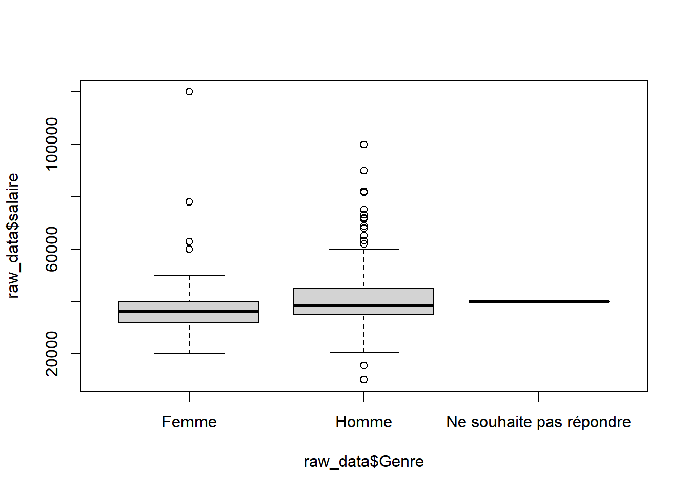 ## Disparité sur les dates d’optention du diplôme
boxplot(raw_data$salaire ~ raw_data$annee_optention_diplome)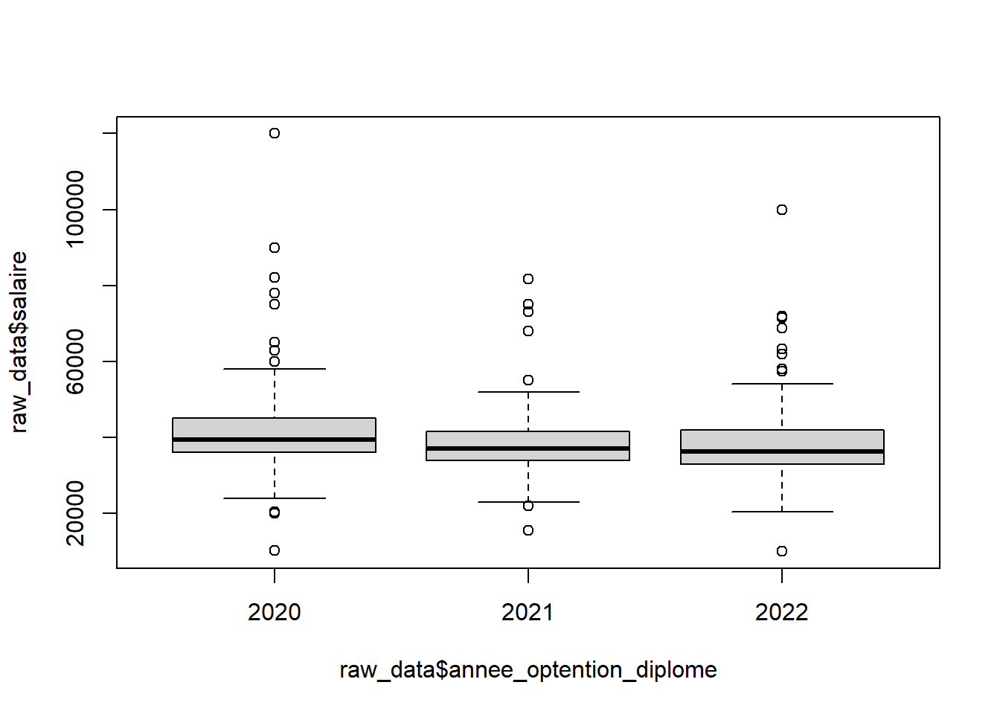 ## Disparité formation initiale/apprentissage/contrat de professionalisation
boxplot(raw_data$salaire ~ raw_data$type_formation)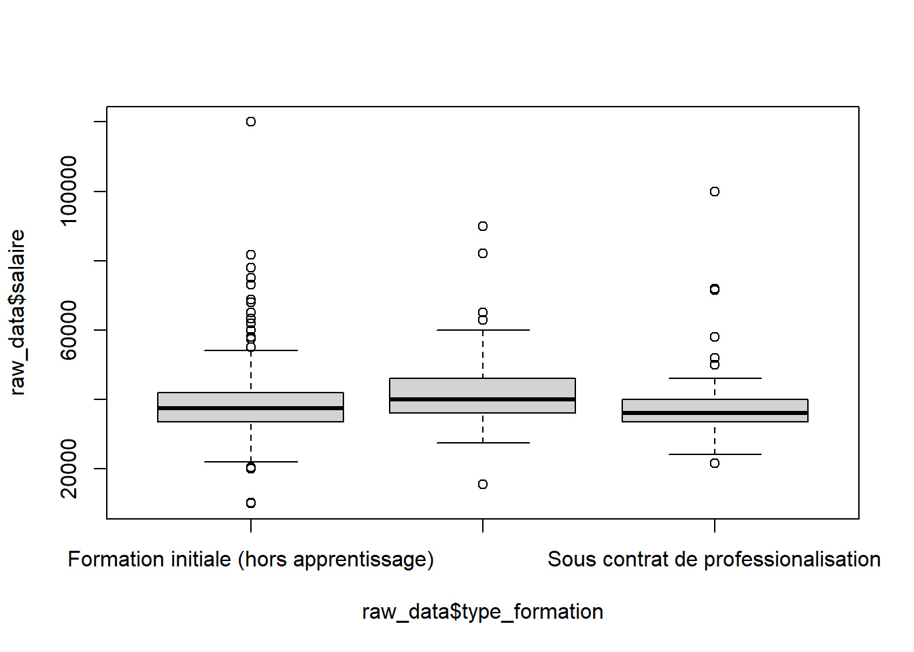
boxplot(raw_data$salaire ~ raw_data$formation)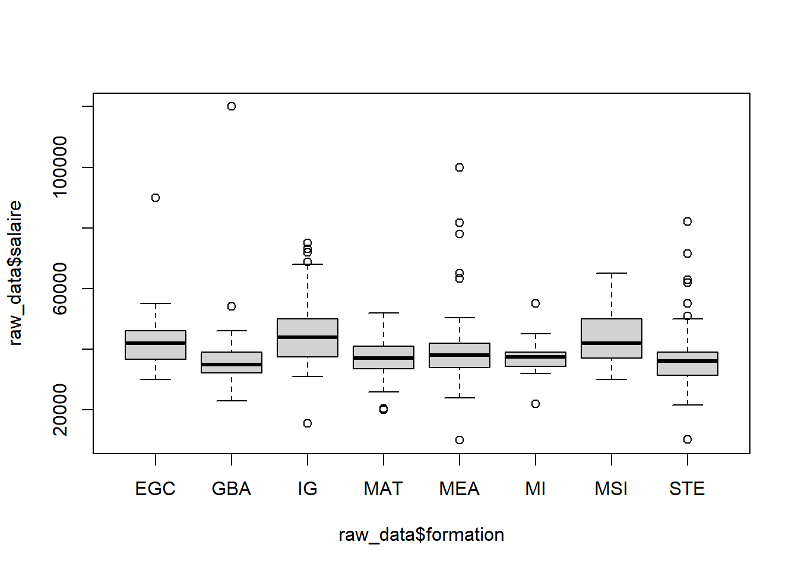
boxplot(raw_data$salaire ~ raw_data$situation_actuelle)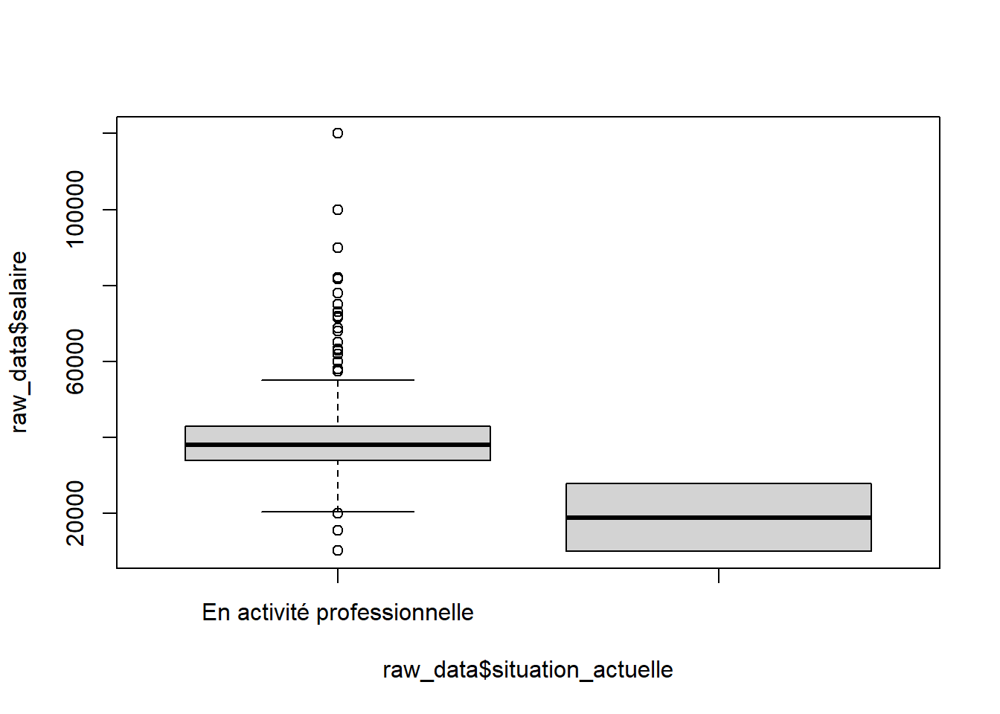
boxplot(raw_data$salaire ~ raw_data$salarie_ou_non)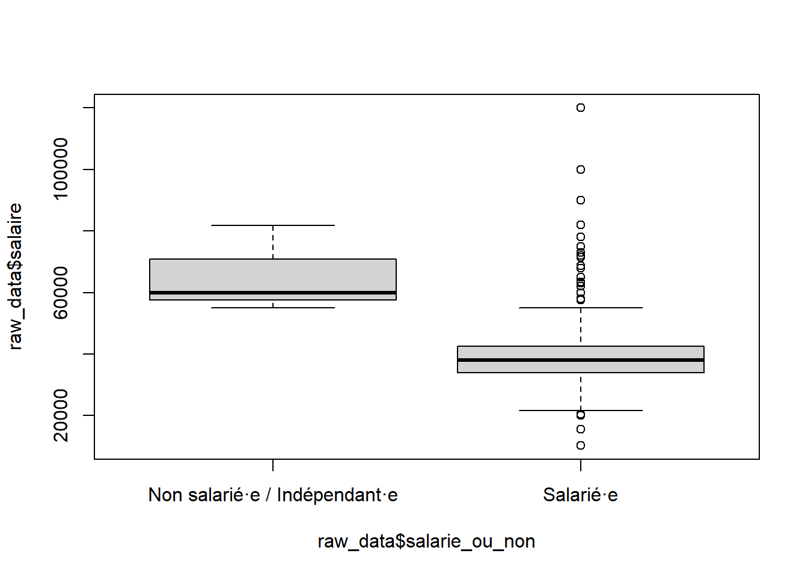
filtered_data <- remove_rows_by_value(raw_data, "situation_actuelle", "En recherche emploi")
filtered_data <- remove_rows_by_value(filtered_data, "situation_actuelle", "En poursuite d'études (hors thèse) / en formation")
filtered_data <- remove_rows_by_value(filtered_data, "situation_actuelle", "En thèse / PhD")
filtered_data <- remove_rows_by_value(filtered_data, "situation_actuelle", "Sans activité volontairement")
filtered_data <- remove_rows_by_value(filtered_data, "situation_actuelle", "En volontariat (VIE, VIA, Volontariat civil..)")
filtered_data <- remove_rows_by_value(filtered_data, "situation_actuelle", "En création d'entreprise /reprise d'entreprise")
ggplot(filtered_data, aes(x = nature_du_contrat, y = salaire)) +
geom_boxplot() +
theme(axis.text.x = element_text(angle = 45, hjust = 1, size = 8)) +
labs(title = "Salary Distribution by Contract Type", x = "Contract Type", y = "Salary")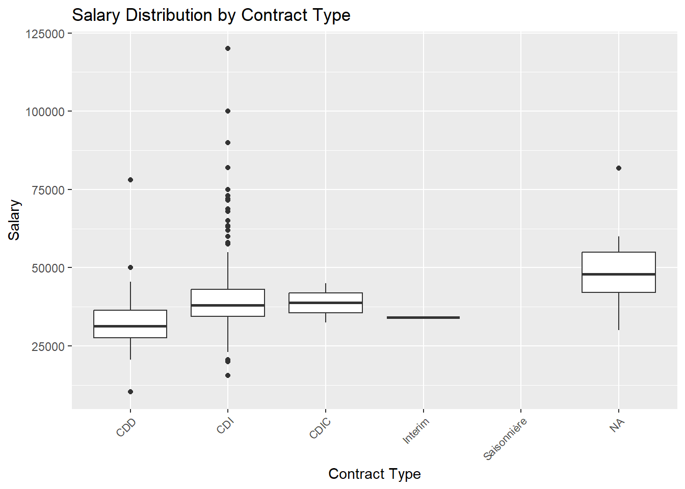
Trier les données de durée du cdd avant
ordered_data <- raw_data[order(as.numeric(raw_data$duree_cdd)), ]
boxplot(raw_data$salaire ~ as.numeric(raw_data$duree_cdd), data = ordered_data)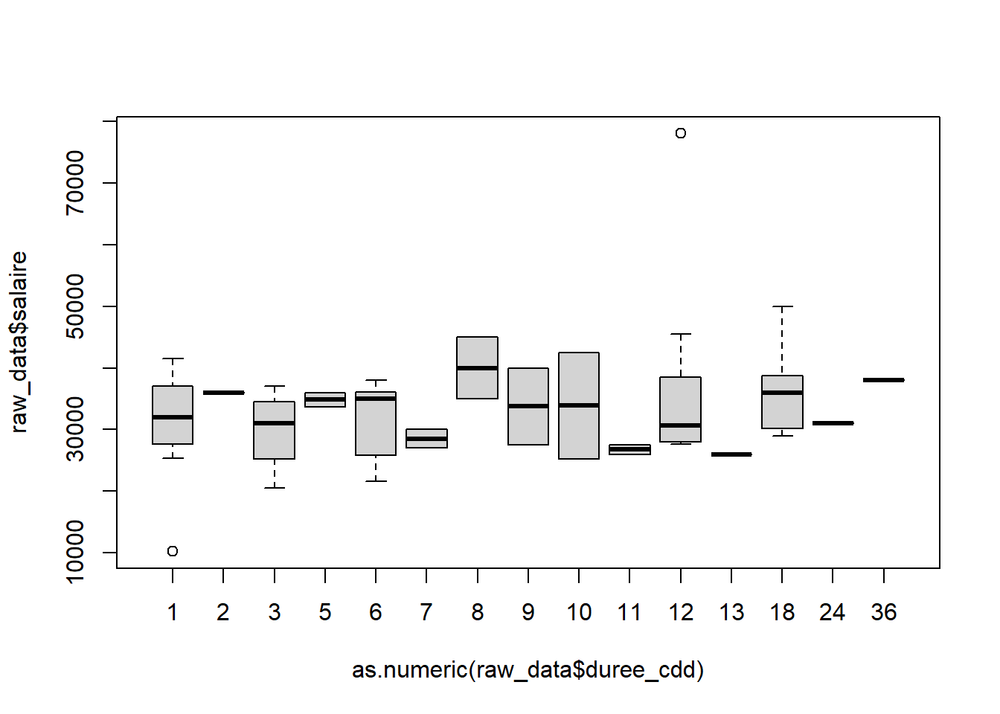 ## Distribution du salaire en fonction de l’ancienneté (Groupée)
monthGroup <- cut(as.numeric(raw_data$duree_cdd),
breaks = c(0, 6, 12, 24, Inf),
labels = c("1-6", "7-12", "13-24", "25+"),
right = FALSE)
boxplot(raw_data$salaire ~ monthGroup, data = raw_data)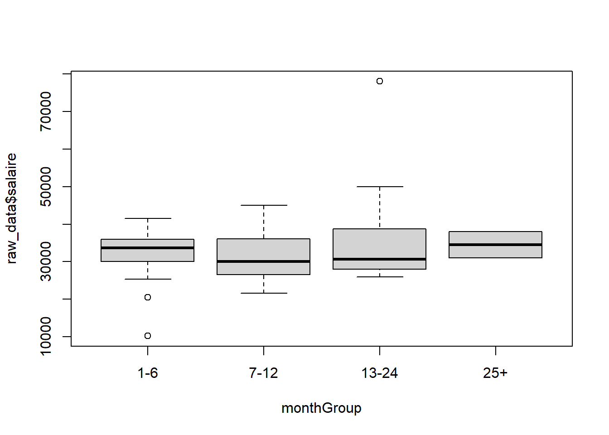
boxplot(raw_data$salaire ~ raw_data$emploi_en_france)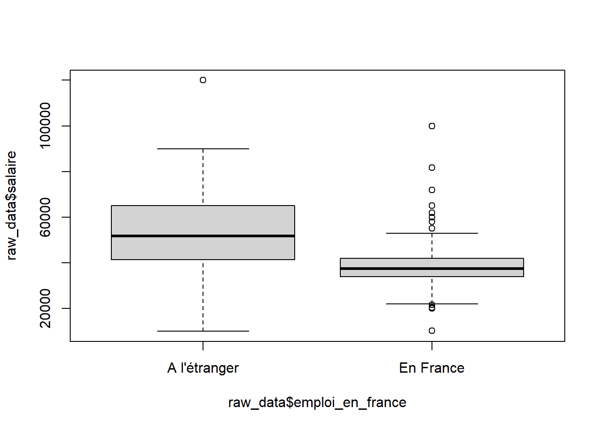
raw_data_filtered <- raw_data[complete.cases(raw_data$emploi_etranger), ]
median_salaries <- tapply(raw_data_filtered$salaire, raw_data_filtered$emploi_etranger, median)
median_order <- names(sort(median_salaries))
emploiFactor <- factor(raw_data_filtered$emploi_etranger, levels = median_order)
ggplot(raw_data_filtered, aes(x = emploiFactor, y = salaire)) +
geom_boxplot(na.rm = TRUE) +
theme(axis.text.x = element_text(angle = 45, hjust = 1, size = 8)) +
labs(title = "Salary Distribution by Country", x = "Country", y = "Salary")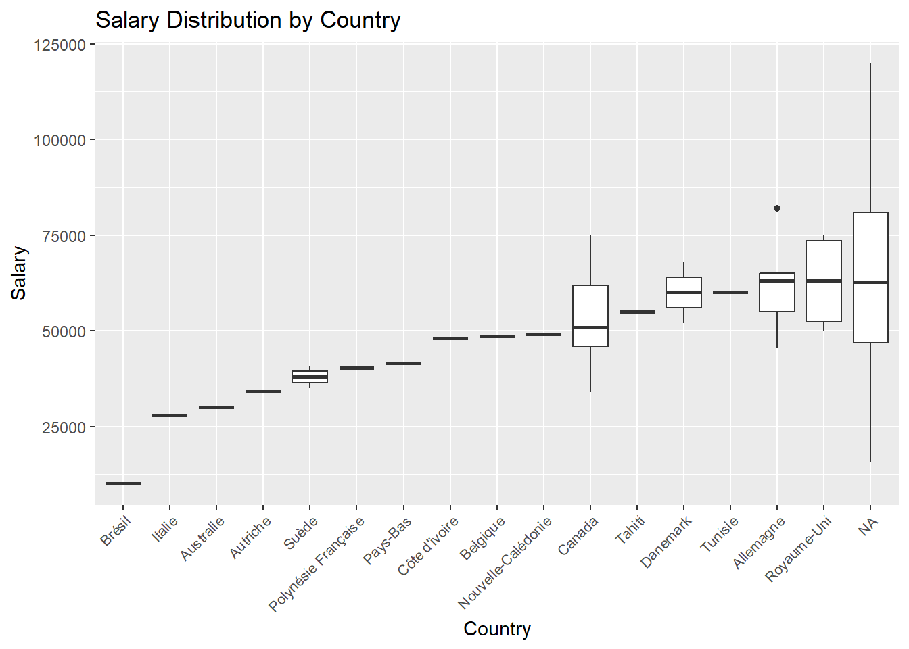